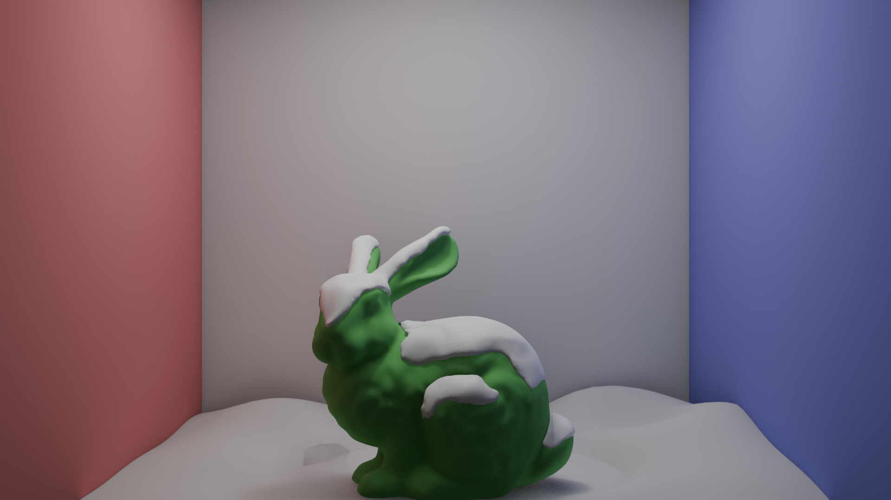
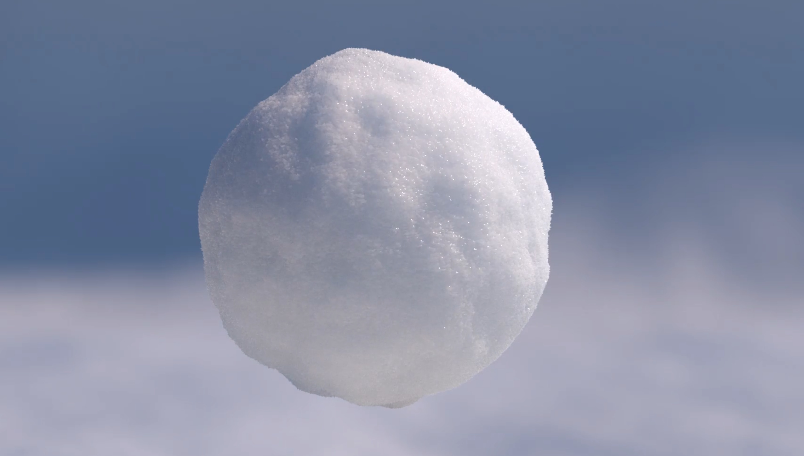
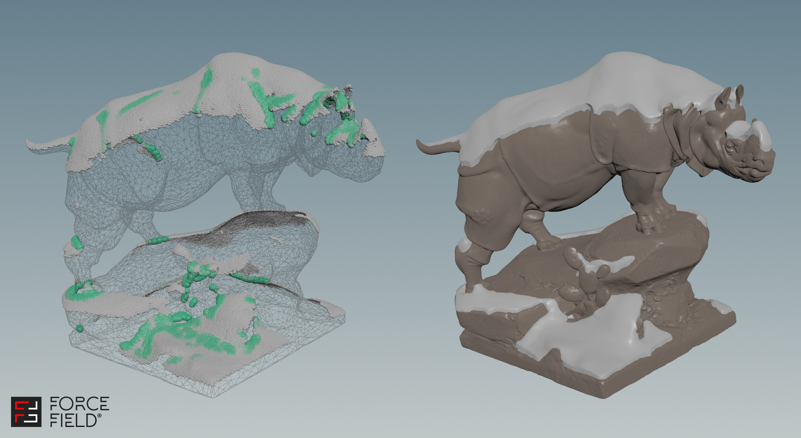
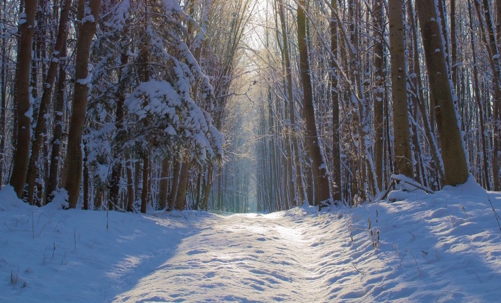

While snow can be a great artistic device in various forms of media, snow in the desired quantities isn't always readily available. Thus, digitally simulating snow is an important problem in the field of computer generated imagery. Current papers already offer algorithms for rendering the various visual properties of snow, including its glints and subsurface behaviors. However, a tool combining these visual techniques with a mesh-generating accumulation simulation isn't readily available. Our project will provide a good solution to this problem for smaller studios without access to more expensive industry software.
The two main challenges of this project will be implementing the necessary rendering techniques and bridging the gap between the rendering pipeline and the mesh-generating accumulation process. The papers included in our references offer solutions for the rendering techniques, though implementation is likely to be a challenge simply due to their technical nature. The second problem arises from the fact that our mesh generation techniques can't produce a matching UV mapping. Therefore, any visual techniques we wish to use must function under this restriction. While the paper by Yan et al. provided on the course website for glint rendering doesn't work without a UV map, a paper by Kemppinen et al. does. The solution from this paper still requires the implementation of triplanar mapping, though we believe this is a feasible integration method thanks to online resources on the topic.
Mesh generation for snow accumulation may pose a challenge as well, though we have planned out a general approach for this side of the project as well. The accumulation process will use raycasts against the scene to determine where snow falls. Then, a signed distance field (SDF) will be updated to add a 'puddle' of snow to the scene. The SDF will then be meshed using surface nets.
|
 Blender |
 Jarrod Hasenjäger |
|
 Houdini |
 Glints from sunlight |
Our basic goals for the project are to implement glint rendering and snow mesh-generation. These will be presented as a demo in which the user can load scenes, adjust snowfall parameters, and generate an accumulated snowfall mesh rendered using the specified techniques. Without this, the project will not be considered successful. For glint rendering, we'll be following the work of Kemppinen et al, which should provide us with sufficient details to produce an implementation in a reasonable timeframe. The goal of this part of the visual system is to imitate the 'sparkle' of snow under direct sunlight, and will be measured against reference images of real snow. Note that this comparison will only focus on the highlights of snow in direct light, as, without subsurface effects, the rendered snow will look noticeably artificial.
For the physical simulation aspect, we'll start with a basic implementation that simulates snowfall and uses SDFs for meshing the snow accumulation, as described in the 'Problem Description' section. The goal for this part of the project is to produce results similar to the bunny example pictured above. The snow in this example was sculpted by hand in Blender, though the results of our project would be automatically generated for a given scene and snowfall settings. While we don't expect to produce fully realistic accumulation with this simulation, like the tree example above, we hope to produce results roughly matching that of the hand-sculpted example.
One ambitious 'aspirational goal' we may pursue is to perform a full physical simulation of snow, following the work of Gissler et al (link). Considering the time constraints of the project, this is probably out of our reach. However, it could leverage the SDF meshing, as the output of Gissler's algorithm is an abstract particle cloud, likely requiring an extra meshing step to enable our visual effects.
Our second aspirational goal is to implement subsurface lighting effects for snow. This seems more reasonable than the physics simulation, as the steps for integrating this rendering technique would be more straightforward. For this part, we'd follow the work of Jensen et al, as suggested by the course website. If we're able to combine this part with the glint effects, we expect to be able to produce images similar to those of the shader reference above.
Setting a standard for the performance of our project is somewhat difficult at the moment, since it's hard to estimate how the constraints of the homework renderer will affect us. Snow accumulation and meshing should be doable in realtime, though glints and subsurface effects will likely take minutes per frame. While the glint paper does achieve 60fps rendering in a browser, it seems unlikely that we'll reach similar results without abandoning the homework framework.
Week |
Tasks |
| 1 | Begin working on incorporating glint rendering with the homework framework. |
| 2 | Prepare Milestone writeup + presentation. Continue working on glints, consider inclusion of subsurface effects. Aim to finish glints by the end of the week, though may run over. |
| 3 | Start snow accumulation. Work on data structures and algorithms for SDFs in parallel with ray-based snowfall simulations. Choose simulation parameters for snowfall, work on UX/UI of the demo. |
| 4 | Wrap up accumulation and remaining tasks, prepare for presentation. Update webpage design. |